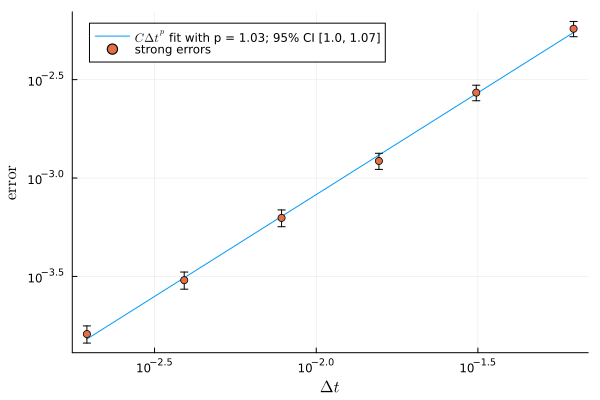
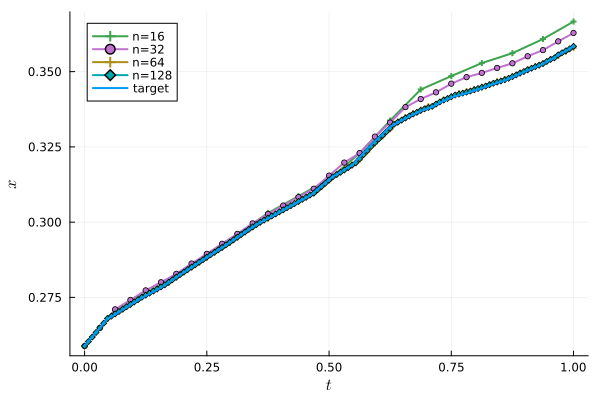
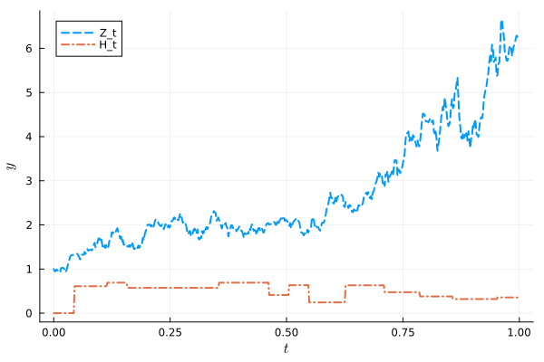
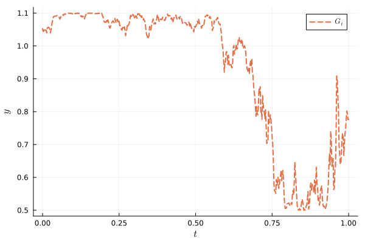

Population dynamics with harvest
This time we consider a population dynamics model with two types of noise, a geometric Brownian motion process affecting the growth rate and a point Poisson step process affecting the harvest.
The equation
More precisely, we consider the RODE
\[ \begin{cases} \displaystyle \frac{\mathrm{d}X_t}{\mathrm{d} t} = \Lambda_t X_t (r - X_t) - \alpha H_t\frac{2X_t}{r + X_t}, \qquad 0 \leq t \leq T, \\ \left. X_t \right|_{t = 0} = X_0, \end{cases}\]
with
\[ \Lambda_t = \lambda(1 + \epsilon\sin(G_t))\]
where $\{G_t\}_{t\geq 0}$ is a geometric Brownian motion process and $\{H_t\}_{t \geq 0}$ is a point Poisson step process with Beta-distributed steps.
We fix $\lambda = 1.0$, $\epsilon = 0.3$, $r = 1.0$, and $\alpha = 0.5$. Notice the critical value for the bifurcation oscilates between $\lambda (1 - \epsilon) / 4$ and $\lambda (1 + \epsilon) / 4$, while the harvest term oscillates between 0 and $\alpha$, and we choose $\alpha = \lambda / 2$ so it oscillates below and above the critical value.
We choose a Beta distribution as the step law, with mean a little below $1/2$, so it stays mostly below the critical value, but often above it.
The geometric Brownian motion process is chosen with drift $\mu = 1$, diffusion $\sigma = 0.8$ and initial value $y_0 = 1.0$.
The Poisson counter for the point Poisson step process is chosen with rate 15.0, while the time interval is chosen with unit time span.
As for the initial condition, we also choose a Beta distribution, so it stays within the growth region, and with the same parameters as for the steps, just for the sake of simplicity.
We do not have an explicit solution for the equation so we use as target for the convergence an approximate solution via Euler method at a much higher resolution.
Numerical approximation
Setting up the problem
First we load the necessary packages
using Plots
using Random
using Distributions
using RODEConvergenceThen we set up the problem parameters.
We set the seed:
rng = Xoshiro(123)Random.Xoshiro(0xfefa8d41b8f5dca5, 0xf80cc98e147960c1, 0x20e2ccc17662fc1d, 0xea7a7dcb2e787c01, 0xf4e85a418b9c4f80)The right hand side of the evolution equation:
function f(t, x, y)
γ = 0.8
ϵ = 0.3
r = 1.0
α = γ * r^2
dx = x > zero(x) ? γ * (1 + ϵ * sin(y[1])) * x * (1 - x / r) - α * y[2] * x / (r + x) : zero(x)
return dx
endf (generic function with 1 method)The time interval:
t0, tf = 0.0, 1.0(0.0, 1.0)The law for the initial condition:
x0law = Beta(7.0, 5.0)Distributions.Beta{Float64}(α=7.0, β=5.0)The noise parameters:
μ = 1.0
σ = 0.8
y0 = 1.0
noise1 = GeometricBrownianMotionProcess(t0, tf, y0, μ, σ)
λ = 15.0
steplaw = Beta(5.0, 7.0)
noise2 = PoissonStepProcess(t0, tf, λ, steplaw)
noise = ProductProcess(noise1, noise2)ProductProcess{Float64, Tuple{GeometricBrownianMotionProcess{Float64}, PoissonStepProcess{Float64, Distributions.Beta{Float64}}}}((GeometricBrownianMotionProcess{Float64}(0.0, 1.0, 1.0, 1.0, 0.8), PoissonStepProcess{Float64, Distributions.Beta{Float64}}(0.0, 1.0, 15.0, Distributions.Beta{Float64}(α=5.0, β=7.0))))The mesh resolution:
ntgt = 2^18
ns = 2 .^ (4:9)
nsample = ns[[1, 2, 3, 4]]4-element Vector{Int64}:
16
32
64
128The number of samples for the Monte-Carlo estimate:
m = 200200And add some information about the simulation:
info = (
equation = "population dynamics",
noise = "gBm and step process noises",
ic = "\$X_0 \\sim \\mathrm{Beta}($(x0law.α), $(x0law.β))\$"
)(equation = "population dynamics", noise = "gBm and step process noises", ic = "\$X_0 \\sim \\mathrm{Beta}(7.0, 5.0)\$")We define the target solution as the Euler approximation, which is to be computed with the target number ntgt of mesh points, and which is also the one we want to estimate the rate of convergence, in the coarser meshes defined by ns.
target = RandomEuler()
method = RandomEuler()RandomEuler{Float64, Distributions.Univariate}(Float64[])Order of convergence
With all the parameters set up, we build the ConvergenceSuite:
suite = ConvergenceSuite(t0, tf, x0law, f, noise, target, method, ntgt, ns, m)ConvergenceSuite{Float64, Distributions.Beta{Float64}, ProductProcess{Float64, Tuple{GeometricBrownianMotionProcess{Float64}, PoissonStepProcess{Float64, Distributions.Beta{Float64}}}}, typeof(Main.var"Main".f), 2, 1, RandomEuler{Float64, Distributions.Univariate}, RandomEuler{Float64, Distributions.Univariate}}(0.0, 1.0, Distributions.Beta{Float64}(α=7.0, β=5.0), Main.var"Main".f, ProductProcess{Float64, Tuple{GeometricBrownianMotionProcess{Float64}, PoissonStepProcess{Float64, Distributions.Beta{Float64}}}}((GeometricBrownianMotionProcess{Float64}(0.0, 1.0, 1.0, 1.0, 0.8), PoissonStepProcess{Float64, Distributions.Beta{Float64}}(0.0, 1.0, 15.0, Distributions.Beta{Float64}(α=5.0, β=7.0)))), RandomEuler{Float64, Distributions.Univariate}(Float64[]), RandomEuler{Float64, Distributions.Univariate}(Float64[]), 262144, [16, 32, 64, 128, 256, 512], 200, [1, 1, 1, 1, 1, 1], [0.0 0.0; 4.1445235e-317 0.0; … ; 0.7289263190251788 1.503951661772154; 0.7190432980566048 1.6855385334483042], [0.2762785815625113, 3.1083295e-317, 6.928860749639e-310, 1.516076086e-315, 0.0, 0.0, 1.8341350562174343, 0.2566383344410249, 1.344280658886064, 0.1848602450273667 … -0.1651011052700409, -0.2283625029997277, 0.4794185628064097, -0.004744388748218504, 0.03707597766299555, 0.3530507601838797, -0.11804225519588088, -0.5544746509466697, 0.9730753315240572, -0.7666430222235453], [1.8258291e-316, 6.31377516e-316, 6.31377516e-316, 2.121995795e-314, 0.0, 6.56673164e-316, 0.0, 0.0, 0.0, 0.0 … 6.5209195e-317, 2.54807084e-316, 6.6107497e-316, 6.7944366e-316, 8.74e-322, 6.41070254e-316, 3.34035016e-316, 3.53376935e-316, 0.0, 1.107e-321])Then we are ready to compute the errors via solve:
@time result = solve(rng, suite) 2.056067 seconds (464.23 k allocations: 22.619 MiB, 26.29% compilation time)The computed strong error for each resolution in ns is stored in result.errors, and a raw LaTeX table can be displayed for inclusion in the article:
table = generate_error_table(result, info) \begin{tabular}[htb]{|r|l|l|l|}
\hline N & dt & error & std err \\
\hline \hline
16 & 0.0625 & 0.00574 & 0.000255 \\
32 & 0.0312 & 0.00272 & 0.000123 \\
64 & 0.0156 & 0.00122 & 5.74e-5 \\
128 & 0.00781 & 0.000627 & 3.07e-5 \\
256 & 0.00391 & 0.000303 & 1.51e-5 \\
512 & 0.00195 & 0.000161 & 8.07e-6 \\
\hline
\end{tabular}
\bigskip
\caption{Mesh points (N), time steps (dt), strong error (error), and standard error (std err) of the Euler method for population dynamics for each mesh resolution $N$, with initial condition $X_0 \sim \mathrm{Beta}(7.0, 5.0)$ and gBm and step process noises, on the time interval $I = [0.0, 1.0]$, based on $M = 200$ sample paths for each fixed time step, with the target solution calculated with $262144$ points. The order of strong convergence is estimated to be $p = 1.035$, with the 95\% confidence interval $[1.0009, 1.0694]$.}The calculated order of convergence is given by result.p:
println("Order of convergence `C Δtᵖ` with p = $(round(result.p, sigdigits=2)) and 95% confidence interval ($(round(result.pmin, sigdigits=3)), $(round(result.pmax, sigdigits=3)))")Order of convergence `C Δtᵖ` with p = 1.0 and 95% confidence interval (1.0, 1.07)Plots
We illustrate the rate of convergence with the help of a plot recipe for ConvergenceResult:
plt = plot(result)
For the sake of illustration, we plot some approximations of a sample target solution:
plt = plot(suite, ns=nsample)
We can also visualize the noises associated with this sample solution:
plot(suite, xshow=false, yshow=true, label=["Z_t" "H_t"], linecolor=:auto)
The gBm noises enters the equation via $G_t = \gamma(1 + \epsilon\sin(Z_t))$. Using the chosen parameters, this noise can be visualized below
plot(suite, xshow=false, yshow= y -> 0.8 + 0.3sin(y[1]), label="\$G_t\$")
This page was generated using Literate.jl.